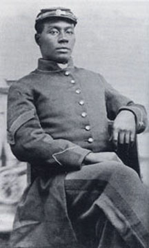

|

NAME: William Walker
BORN: Unknown
DIED: 1863
ALLEGIANCE: Union
HIGHEST RANK: Sergeant
UNIT: 3rd South Carolina Colored Infantry
RECORD: Mustered into service circa June of 1863;
executed for mutiny November 1863
|
|
Little is known about the early life of Sgt. William
Walker, beyond the fact that his regiment was comprised of
former slaves mustered into service in the area of Hilton
Head, South Carolina, in June of 1863.
In November of 1863, however, the previously nondescript
Walker achieved national prominence when he attempted to
lead a mutiny among the members of his regiment over the
policy of the Federal Army of giving African American
Soldiers less than equal pay. It was charged that Walker led
a group of men from his company to the tent of Colonel
Augustus Bennett, where they stacked arms and hung their
accouterments on the stacks, with Walker asserting that the
men, "would not do duty any longer for 7 dollars per month."
The Colonel ordered the men to take their arms and go to
their regular work or they would be "shot down for it."
Walker is alleged to have told the men to ignore the order,
and to leave their arms and walk away.
Walker was tried at Hilton Head by a military court
between from January 9-12, 1864 on specifications of
inciting a mutiny, failing to report a mutiny, and
insubordination. Evidence at trial painted a bleak portrait
of how Walker and his comrades were being used. It was shown
that the soldiers had been worked nearly to exhaustion doing
fatigue duty, including preparation of camps for white
regiments, which ran contrary to standing orders from Gen.
Quincy Gilmore. Little time was left for actual military
training for the regiment. It was also demonstrated Walker
and some of the other recruits had been promised full pay
when they enlisted. Walker's defense also alleged at the
trial that the men had never been read the general orders of
the army as required by the Articles of War or any of the
regulations which indicated that their acts were mutiny and
punishable by death prior to the strike.
In addition, Walker himself asserted that fears of a mutiny
had been overblown by the white officers of the regiment. He
stated:
As to my conduct on the 19th day of November last, when the
Regiment stacked arms and refused farther duty, I believe
that I have proved conclusively by the testimony of the
non-commissioned officers and men of my company that I did
not then exercise any command over them--that I gave no word
of counsel or advice to them in opposition to the request
made by our commanding officer--and that, for one, I carried
my arms and equipments back with me to my company street. I
respectfully suggest that these men are less apt to be
mistaken, than officers who feared that they were facing a
general mutiny, and were ignorant of the next movement that
might be made by the excited crowd before them--but an
assemblage who only contemplated a peaceful demand for the
rights and benefits that had been guaranteed them.
Despite his strong defense, Walker was convicted by a vote
of 4 to 2 and executed before President Lincoln could
consider amnesty. Ultimately, however, Walker achieved some
measure of vindication. The case was frequently mentioned in
debates over the pay of black soldiers in the United States
Senate and the conditions in the regiment highlighted in the
trial played a role in efforts to reform army practices
regarding African-American soldiers.
Source: Christopher Bates for the History 139A website.
|